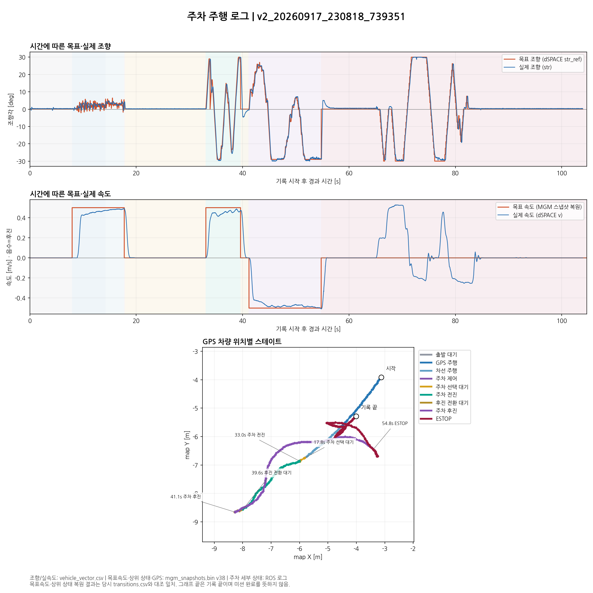
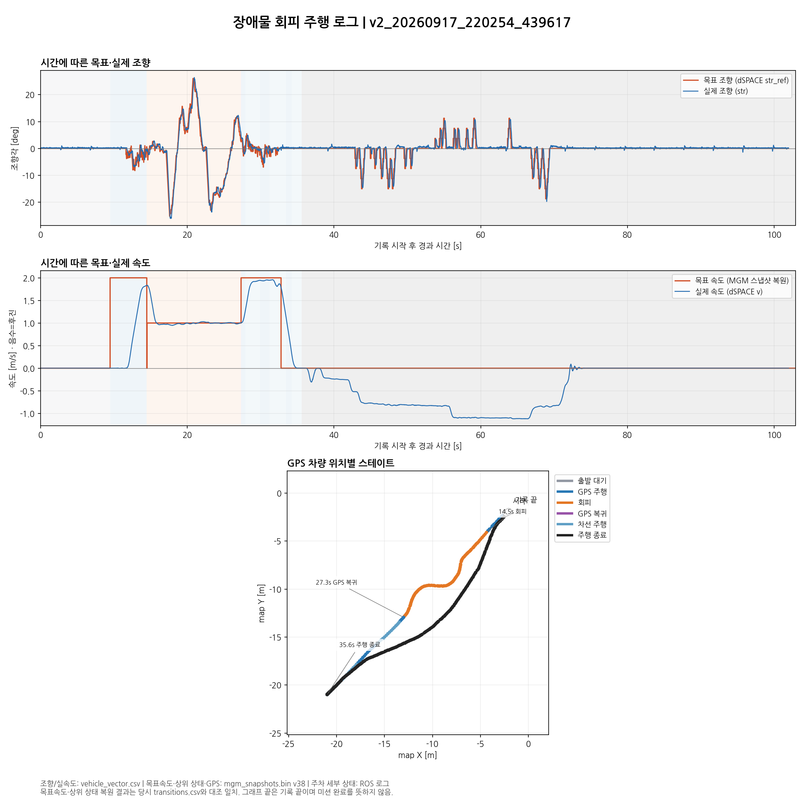

주차 · 장애물 회피 주행 플롯
최근 각 주행 세션. 시간축은 기록 시작 기준. 음수 속도는 후진. 기록 종료는 미션 완료를 뜻하지 않습니다.
PDF 내려받기
주차 — v2_20260917_230818_739351
조향
속도
위치별 스테이트
상태 시간표 CSV

장애물 회피 — v2_20260917_220254_439617
조향
속도
위치별 스테이트
상태 시간표 CSV
